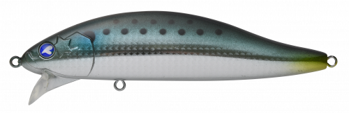
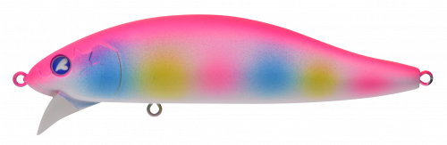
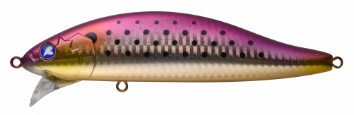
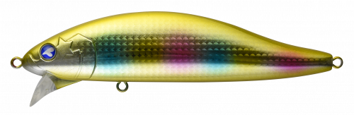

ゼッパー140F
（ZEPPER 140F）
ゼッパー140FはBlueBlue（ブルーブルー）のビッグミノーです。
ボリュームのある体高のボディとワイドリップで、左右にバタバタと倒れ込むような激しいアクションを出すモデル。うちわで扇いだような強い波動と強烈なフラッシング、2種類のラトル音で、コノシロやボラが群れている中でもルアーの存在に気付かせます。

画像出典:BlueBlue公式HP
スペック
- メーカー
- BlueBlue（ブルーブルー）
- タイプ
- ビッグミノー（フローティング）
- 全長
- 140mm
- 自重
- 36g
- レンジ
- 水面〜30cm
- フック
- #1×2
- リング
- #4（肉厚スプリットリング）
- ターゲット
- シーバス・青物
- 価格
- 2,450円（税別）
▼今すぐチェック

ゼッパー140Fの特徴
超強力な波動と強烈なフラッシングで、ベイトの群れの中でも気付かせる
-
激しいワイドアクションで強い波動
体高のあるボディとワイドリップで、左右に倒れ込むような激しいアクション。水を大きく動かして強い波動を出し、広い範囲の魚にアピールします。
-
2種類のラトル音
高音域と低音域の2種類のラトル音を混ぜて、魚の側線にも刺激を与えます。ベイトが群れていてルアーに気付かれにくい状況でも存在を主張します。
-
大型フックでランカーや青物も安心
BlueBlueオリジナルの肉厚スプリットリング#4と#1フックを標準装備。ランカーシーバスや青物が掛かっても安心してやり取りできます。
ゼッパー140Fの使い方
基本はただ巻き。水面〜30cmを、激しいワイドアクションで泳がせます。
コノシロやボラの群れが見えるときは、群れの中や下を通すイメージで巻くのがおすすめ。シルエットが大型ベイトに似ているので、スレた大型のシーバスにも見切られにくくなっています。
ゼッパー140Fの得意な状況
コノシロ・ボラ・サッパなど大型ベイトが群れている秋〜冬の河川・河口・港湾。ベイトが多すぎてルアーに気付いてもらえないときや、ランカーを狙いたいときに向いています。
ワンポイント
水面で引き波を立てて誘いたいときは、同じシリーズのウェイクゼッパー140Fを。ベイトが小さいときは80F・80Sに持ち替えましょう。
ゼッパーシリーズの使い分け
| モデル | 全長／自重 | 得意な場面 |
|---|---|---|
| ゼッパー40F | 40mm／2.5g | レンジ0〜20cm。ライトゲームや小さいベイトに |
| ゼッパー80F | 80mm／9g | 小型〜中型ベイトに。浮かせて使いたいとき |
| ゼッパー80S | 80mm／10g | 80Fより少し沈めて使いたいとき |
| ゼッパー140F | 140mm／36g | レンジ水面〜30cm。大型ベイトパターンに（本記事のモデル） |
| ウェイクゼッパー140F | 140mm／35g | レンジ水面。引き波で誘いたいときに |
ゼッパーはどのサイズも強い波動でアピールするミノー。ベイトの大きさと、誘いたいレンジで選びましょう。
人気カラー
公式ラインナップから4色を紹介します（カラー名は公式の表記のまま）。

#02 ボラボラボラを意識したナチュラルカラー。ボラパターンの河川・河口に。

#06 マットピンクキャンディマットなピンク系。濁りや朝夕のマズメにシルエットを出したいときに。

#07 汽水コノシロ汽水域のコノシロを意識したカラー。秋〜冬のコノシロパターンに。

#09 ゴールドキャンディゴールド系のアピールカラー。濁りの強い河川や曇りの日に。
画像出典:BlueBlue公式HP
ゼッパー140Fに似ているルアー
-
 カゲロウ155F
メガバス
詳細はこちら＞
カゲロウ155F
メガバス
詳細はこちら＞
全長155mm・自重39gのシャローランナー。同じ大型ベイト向けのサイズで、ナチュラルなロールで見せたいときに。
-
 ハーデス150F
バスデイ
詳細はこちら＞
ハーデス150F
バスデイ
詳細はこちら＞
全長150mmクラスのシャローランナー。大型ベイトパターンで、もっと遠くまで飛ばしたいときに。
-
 コモモSF-155
ima
詳細はこちら＞
コモモSF-155
ima
詳細はこちら＞
全長155mm・自重25gのシャローランナー。強い波動ではなく、ナチュラルなアクションでゆっくり見せたいときに。